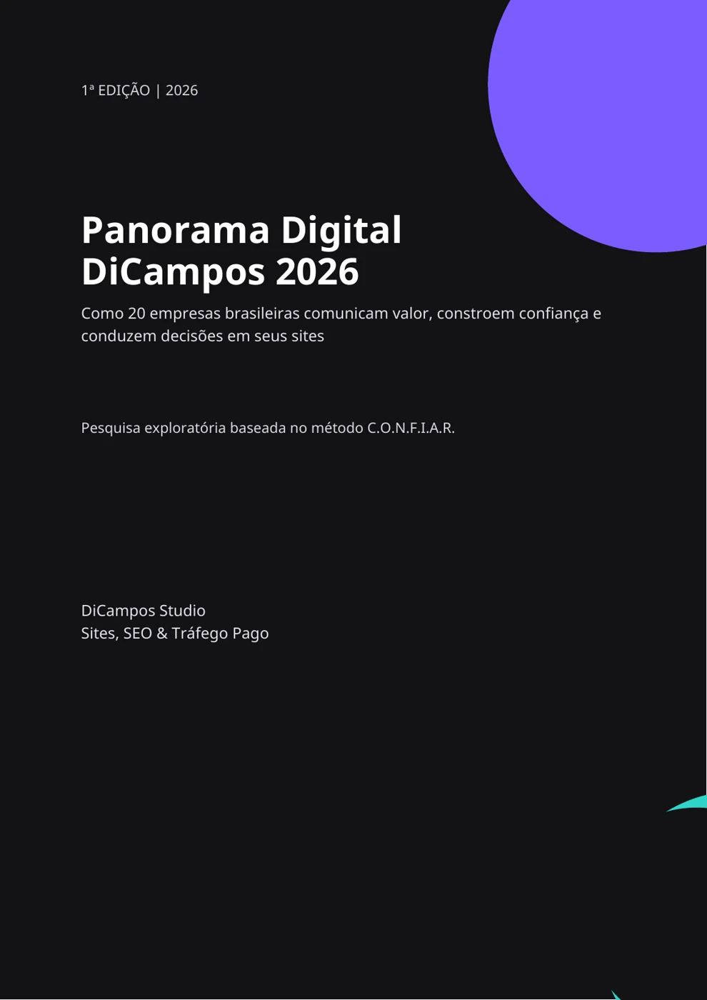

Análise de mercado
Observe como empresas estruturam suas mensagens, provas e caminhos de contato.
Baixe gratuitamente o Panorama Digital DiCampos 2026 e conheça os padrões encontrados na análise de 20 sites empresariais brasileiros.

Download gratuitoApós o envio, você será direcionado à página de download. Leva menos de um minuto.
Se o formulário não carregar, abra-o em uma nova aba. Ao enviar, seus dados serão usados para atender à solicitação do material. Política de Privacidade.
Observe como empresas estruturam suas mensagens, provas e caminhos de contato.
Conheça sete pilares usados para avaliar clareza, autoridade e capacidade de persuasão.
Identifique melhorias que podem ser levadas para o site e a estratégia da sua empresa.
Gráficos, comparativos, glossário, recomendações e referências organizados em 45 páginas.
Os sites avaliados foram mais consistentes em clareza do que em relevância e demonstração de resultados. O relatório mostra onde essa diferença aparece e como reduzi-la.
A DiCampos Studio une estratégia digital, desenvolvimento de sites, SEO e tráfego pago para criar experiências que transmitam confiança, fortaleçam marcas e gerem oportunidades reais de negócio.
Conheça a DiCampos Studio →